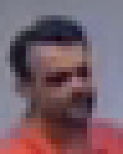

Orientações sobre a escolha de det_size
det_size controla o tamanho da imagem que entra no detector de faces SCRFD. No ForensicFace, o valor informado é convertido para uma janela quadrada:
ff = ForensicFace(det_size=320)internamente usa:
det_size = (320, 320)A imagem original é redimensionada mantendo a proporção, encaixada dentro dessa janela quadrada e completada com bordas pretas quando necessário. Depois da detecção, os bounding boxes e os pontos faciais são convertidos de volta para as coordenadas da imagem original.
O valor de det_size não muda a imagem final alinhada, que continua sendo uma face de 112 x 112 para os modelos de reconhecimento. O det_size muda apenas o tamanho com que cada face é “vista” pelo detector antes do alinhamento.
Exemplo: se uma face ocupa cerca de 5% do maior lado da imagem:
- com
det_size=320, ela terá aproximadamente16 pxno detector; - com
det_size=640, ela terá aproximadamente32 px; - com
det_size=1280, ela terá aproximadamente64 px.
O valor padrão de det_size do forensicface é 320.
Os exemplos a seguir ilustram situações diversas que demonstram a importância da escolha adequada do valor de det_size.
Exemplo: World’s Largest Selfie
A imagem abaixo tem 2048 x 1150 pixels e contém faces de vários tamanhos. Usando o mesmo detector (det_10g.onnx) e o mesmo limiar det_thresh=0.5, apenas mudando det_size, o número de faces detectadas muda bastante:
{kind=link}
Com det_size=320, o detector encontra principalmente faces grandes e relativamente nítidas. Com det_size=640, faces menores começam a entrar no regime de escala em que o SCRFD trabalha melhor. Com det_size=1280, muitas faces pequenas passam a ser detectadas, mas o custo computacional também sobe.
det_size |
Faces detectadas | Menor face detectada, aprox. |
|---|---|---|
| 320 | 41 | 36,7 px |
| 640 | 202 | 16,2 px |
| 1280 | 490 | 8,3 px |
Observação: os tamanhos acima são medidos como sqrt(largura * altura) do bounding box detectado na imagem original. Eles descrevem esta imagem específica, não uma garantia geral de desempenho.
Exemplo: face grande na imagem
Quando a face ocupa uma grande proporção da imagem, valores pequenos de det_size já podem ser suficientes. A imagem abaixo tem 270 x 344 pixels, e a face ocupa boa parte da imagem. Nesse caso, até det_size=32 detecta a face.
A figura abaixo foi gerada com ff.process_image(..., draw_keypoints=True). A opção draw_keypoints=True desenha os cinco pontos faciais na face alinhada retornada pelo forensicface.
{kind=link}
Esse exemplo também mostra que detectar uma face não significa necessariamente localizar os pontos faciais com a mesma precisão. Com det_size=32, a face é detectada, mas os keypoints ficam visivelmente menos bem posicionados, porque a imagem foi reduzida para uma janela muito pequena antes da detecção. Com det_size=64, os pontos já melhoram. Com det_size=128 e det_size=320, os keypoints ficam mais estáveis e melhor alinhados. Isso importa porque o forensicface usa esses pontos para gerar a face alinhada de 112 x 112 pixels, a partir da qual são extraídas as embeddings para reconhecimento.
Quando a face já ocupa uma proporção grande na imagem, aumentar det_size tende a trazer pouco ganho para a detecção. Nesses casos, 320 é uma escolha conservadora e prática. Valores menores podem até funcionar, mas devem ser testados.
Exemplo: CFTV com face distante
Em imagens de CFTV, a resolução total do frame pode parecer alta, mas a face pode ocupar poucos pixels. A imagem a seguir tem 960 x 480 pixels. Com det_size=320, a face não é detectada com det_thresh=0.5. Com 640 e 1280, a face passa a ser detectada.
det_size |
Resultado |
|---|---|
| 320 | nenhuma face detectada |
| 640 | 1 face, det_score=0,63 |
| 1280 | 1 face, det_score=0,85 |
{kind=link}
A imagem a seguir é ainda mais desafiadora: a pessoa está parcialmente na borda da imagem, a face é menor e há menos detalhe visual disponível. Nesse caso, só det_size=1280 detectou a face com det_thresh=0.5.
{kind=link}
Redetectando um crop salvo
Uma situação comum ao processar vídeo é detectar a face no frame inteiro com det_size alto, recortar a região da face com margem e salvar esse recorte como uma imagem. O método extract_faces() do forensicface permite fazer isso.
A partir da detecção no último exemplo com det_size=1280, foi salvo um crop com o bounding box estendido em 100% em cada dimensão, configuração padrão do forensicface. A imagem salva tem apenas 24 x 30 pixels:

A imagem acima está ampliada apenas para visualização. O tamanho real da imagem salva é este:
Ao tentar detectar novamente a face nessa imagem, usar o mesmo det_size=1280 falha. Com det_size=160 ou det_size=320, a face volta a ser detectada:
{kind=link}
Isso acontece porque det_size sempre é aplicado à imagem que está sendo processada naquele momento. No frame inteiro, a face é minúscula em relação aos 960 x 480 pixels, então det_size=1280 ajuda a trazê-la para uma escala mais detectável. Depois do recorte, a mesma face passa a ocupar uma proporção grande da imagem de 24 x 30 pixels. Redimensionar esse crop para 1280 x 1280 faz a face ficar enorme na entrada do detector e amplia apenas os blocos, ruído e compressão já presentes no recorte. Com det_size=160 ou 320, a face entra em uma faixa de escala mais razoável para o SCRFD.
Esses exemplos mostram um limite importante: aumentar det_size pode fazer uma face pequena ser detectada, mas não cria detalhe facial novo. Quando a face tem poucos pixels na imagem original (aproximadamente 15 pixels de altura neste exemplo), o alinhamento e a embedding ainda devem ser interpretados com cautela, mesmo quando o detector retorna uma detecção com boa confiança.
Relação com o SCRFD
O detector usado pelo forensicface é baseado no SCRFD, descrito no artigo Sample and Computation Redistribution for Efficient Face Detection.
O SCRFD foi desenhado pensando em detecção eficiente de faces em múltiplas escalas. No modelo det_10g.onnx usado pelo forensicface, a detecção é feita em mapas de características com strides 8, 16 e 32. Isso significa que faces muito pequenas na imagem de entrada do detector dependem fortemente dos níveis mais rasos, especialmente o stride 8.
Por isso, o valor de det_size muda a dificuldade do problema:
- se a face fica muito pequena dentro da janela do detector, ela pode não produzir evidência suficiente para ser detectada;
- se a face fica em uma faixa de escala mais confortável, a chance de detecção e a precisão dos pontos faciais aumentam;
- se
det_sizecresce muito, o detector avalia muito mais posições e pode encontrar mais faces pequenas, mas também pode encontrar falsos positivos em texturas, óculos, mãos, cartazes e regiões borradas.
Sugestões para escolher na prática
Comece com det_size=320 quando:
- a imagem é um retrato, selfie simples, foto de documento ou rosto ocupando boa parte do quadro;
- a face principal ocupa mais ou menos 10% ou mais do maior lado da imagem;
- você quer boa velocidade e não espera muitas faces pequenas.
Use det_size=640 quando:
- a imagem tem várias pessoas;
- a face de interesse ocupa algo entre 5% e 10% do maior lado;
- você está processando frames de vídeo, screenshots ou imagens de cena aberta;
det_size=320perde faces que visualmente ainda parecem aproveitáveis.
Considere det_size=960 ou det_size=1280 quando:
- as faces são pequenas, mas ainda têm detalhe real na imagem original;
- o objetivo é maximizar recall em fotos de grupo ou imagens investigativas;
- o tempo de processamento e o uso de memória são aceitáveis;
- você revisará os resultados, porque podem aparecer mais falsos positivos.
Evite aumentar det_size esperando recuperar informação que não existe. Se a face original tem pouquíssimos pixels, está muito borrada, comprimida ou oculta, aumentar det_size apenas amplia a mesma falta de detalhe.
Uma tabela prática:
| Face em relação ao maior lado da imagem | Tamanho efetivo com 320 |
Tamanho efetivo com 640 |
Sugestão inicial |
|---|---|---|---|
| 20% | 64 px | 128 px | 320 deve bastar |
| 10% | 32 px | 64 px | 320 ou 640 |
| 5% | 16 px | 32 px | 640 pode ser melhor |
| 2,5% | 8 px | 16 px | 960 ou 1280, se houver detalhe |
| 1% | 3 px | 6 px | considere recortar a imagem original |
É obrigatório que o valor de det_size seja múltiplo de 32, como 320, 640, 960 ou 1280. Valores que não sejam múltiplos de 32 resultarão em erro de processamento na etapa de detecção.
Custo computacional
O custo do detector cresce aproximadamente com a área da janela:
640 ~= 4x o custo de 320
960 ~= 9x o custo de 320
1280 ~= 16x o custo de 320Na prática, o impacto depende do hardware, do provedor do ONNX Runtime (CUDAExecutionProvider, CPUExecutionProvider, etc.) e do restante do fluxo. O reconhecimento facial ainda roda sobre faces alinhadas de 112 x 112, mas uma detecção maior pode produzir muito mais faces para alinhar e processar.
Interação com qualidade da imagem
det_size ajuda quando a face está pequena em uma imagem que ainda preserva detalhes. Ele ajuda menos quando o problema principal é qualidade:
- desfoque de movimento;
- compressão forte;
- baixa iluminação;
- face fora de foco;
- pose extrema;
- oclusão por mãos, cabelo, máscara, óculos escuros ou outras pessoas.
Nesses casos, aumentar det_size pode até detectar mais faces, mas nem sempre melhora o alinhamento ou a qualidade da embedding. Para uso forense, vale olhar também para os pontos faciais, a face alinhada e a qualidade visual do recorte.
Interação com det_thresh
det_size e det_thresh controlam coisas diferentes:
det_sizemuda a escala em que o detector vê a imagem;det_threshmuda o limiar mínimo de confiança para aceitar uma detecção.
Reduzir det_thresh pode aumentar recall, mas também aumenta falsos positivos. Aumentar det_size pode tornar faces pequenas mais detectáveis sem baixar o limiar, mas também aumenta custo e pode revelar candidatos ambíguos.
Uma estratégia razoável:
- comece com
det_size=320edet_thresh=0.5; - se faces pequenas forem perdidas, tente
det_size=640; - se o objetivo for busca ampla em multidões ou imagens grandes, teste
det_size=960ou1280; - só depois ajuste
det_thresh, e revise visualmente as detecções.
Resumo
det_size deve ser escolhido principalmente pela relação entre o tamanho da face e o tamanho da imagem, não apenas pela resolução total da imagem. Para faces ocupando uma boa proporção da imagem, 320 tende a ser suficiente. Para faces pequenas em imagens grandes, 640 é um bom primeiro aumento. Para multidões ou busca de faces muito pequenas, 960 ou 1280 podem melhorar recall, com custo computacional maior e possibilidade maior de falsos positivos.